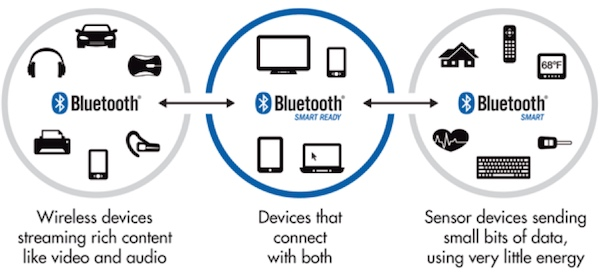

Cannon蓝牙入门
现在一样东西能称得上智能硬件，它得有一个前提条件：能和手机通信。我们看一下物联网的几大热门无线通信技术：
- 蓝牙：低成本、低功耗，设备和手机可以直接通信；
- WiFi：使用广泛、功耗略高，需要借助路由器上网，手机和设备通过英特网/局域网来通信；
- Zigbee：成本略高，需要借助网关上网，手机和设备通过英特网来通信；
- 3G/4G：成本高，需要3G/4G手机卡，设备和手机通过英特网来通信；
得益于手机的直接支持，一个蓝牙设备可以无需借助外力就和手机通信，这让蓝牙在无线个人局域网(WPAN)中广泛使用。近些年来，可穿戴、智能家居、车载设备等领域也随处可见蓝牙技术的影子。
现在，小钢炮出场了，它的特色是“蓝牙+传感器”。目的就是要把传感器的数据，通过低成本、低功耗的蓝牙技术，传给手机，甚至英特网。
通过本文，希望让大家在玩小钢炮之前，对蓝牙有一个感性的认识。
“当蓝牙遇上传感器” —— 小钢炮来了。
低功耗蓝牙¶
蓝牙技术联盟(Bluetooth SIG)在2012年推出了蓝牙4.0技术规范，它包含了三个方面： 
- 传统蓝牙(Bluetooth)：适用于传输音频、音乐、文件等数据的场合，如蓝牙耳机、鼠标键盘等。
- 低功耗蓝牙(Bluetooth Smart)：适用于小数据量传输，但对功耗又敏感的场合，如智能手环、iBeacon等。低功耗蓝牙又称之为Bluetooth Low Energy(BLE)。
- 双模蓝牙(Bluetooth Smart Ready)：双模蓝牙是兼容传统蓝牙和低功耗蓝牙两种技术指标的规范，如手机和电脑就属于双模蓝牙设备。
低功耗蓝牙的主要特点包括：
- 超低峰、平均和空闲模式功耗；
- 一颗纽扣电池可以长时间工作；
- 较低的物料及生产成本；
- 协议简单，适用于小数据量传输；
- 多平台支持，如iOS 7.0+和Android 4.3+移动平台，以及大多数PC平台；
必备知识¶
1. 物理信道¶
低功耗蓝牙运行在2.4GHz ISM频段，GFSK调制方式，Bit-rate：1Mbit/s。
它有40个频道，频道间隙为2MHz，其中3个为固定的广播通道，其余37个为跳频的数据通道。
2. 状态和角色¶
低功耗蓝牙有几种状态：
- 待机状态(Standby)：默认状态，不做任何事情
- 广播状态(Advertising)：广播状态（周期性）
- 扫描状态(Scanning)：搜索正在广播的设备
- 发起连接状态(Initiating)：向某个已被搜索到的设备主动发起连接
- 连接状态(Connection)：两个设备之间建立起数据通道
低功耗蓝牙有两种角色：
- 主设备(Master)：主动发起连接的一方
- 从设备(Slave) ：被动接受连接的一方，通常是周期性发送广播
3. 典型通信过程¶
一次典型的低功耗蓝牙通信过程为：
- 从设备发射广播
- 主设备开启扫描
- 主设备搜索到从设备的广播
- 主设备发起连接请求
- 从设备响应连接请求
- 主设备和从设备建立起连接
- 主设备和从设备之间传输数据
- 断开连接
只有处于两个相互建立连接的设备，才能发送数据。
4. 协议¶
低功耗蓝牙协议是分层的：
重要协议如下：
- PHY：物理层，包含信道、频段、调制方式等概念；
- LL：链路层，包含比特率、时序、纠错等概念；
- L2CAP：逻辑链路控制适配层，包含如建立链连接、断开连接等概念；
- ATT：属性层，包含如设备UUID等概念；
- GATT：通用属性层，包含特征值、描述符等概念；
- GAP：各种Profile的基础；
- Profile：针对某些特定应用商定的协议，如心率、近距离感应、遥控等；
整个协议可以分成Controller和Host两部分，有两种实现方式：
- 单芯片方案（SoC方案）：Controller、Host、Profile、Application在同一芯片中，市面常见的TI CC254x、Nordic nRF51822等都是单芯片方案；
- 双芯片方案：Controller属于一个芯片(蓝牙收发控制器)，Host、Profile、Application属于另一个芯片（通常为一个MCU）。本文描述的BlueNRG就是一个单纯的Controller，外需配有一个MCU；
- HCI：Host和Controller之间的接口，一般为SPI、Uart、USB等总线；
单芯片方案 vs 双芯片方案：并没有好与坏，只有合适不合适，选择哪种取决于应用场景。双芯片方案架构灵活，可以适配多种MCU；单芯片方案简单小巧，易于实现。
BlueNRG芯片¶
BlueNRG是意法半导体(ST)推出的一款蓝牙控制器芯片(Controller)。它功耗极低、发射功率可以达到+8dB，是业内发射距离最远的低功耗蓝牙芯片。
BlueNRG属于上面描述的双芯片方案，它内部实现了蓝牙协议栈。实际应用中，外面需配有MCU，MCU负责完成Profile和应用层事物，而BlueNRG负责完成蓝牙通信的任务：
小钢炮使用了BlueNRG-MS+STM32F401的双芯片方案，其中：
- BlueNRG-MS是支持M/S(Master/Slave，主从一体)协议栈的芯片版本；
- STM32F401是性能强大的MCU，可以完成各类算法、协议等，片内资源是单芯片方案难以比拟的；
- HCI使用了SPI总线作为BlueNRG-MS和STM32F401之间的接口；
更多关于BlueNRG的资源介绍请参阅这里。
嵌入式API¶
为了方便操控BlueNRG，我们提供了低功耗蓝牙SDK，它封装了在MCU上的蓝牙操作。
通过头文件，我们可以看到相应的API，在线阅读点击这里。
本地文件位于SDK的/system/middlewares/juma/sdk/bluenrg_sdk_api.h路径下。
摘取部分API如下：
/* 设置设备广播名称 */
tBleStatus ble_device_set_name(const char* new_device_name);
/* 设置设备广播间隔 */
void ble_device_set_advertising_interval(uint16_t interval);
/* 设置设备地址 */
tBleStatus ble_address(uint8_t* advaddress);
/* 开始广播 */
tBleStatus ble_device_start_advertising(void);
/* 停止广播 */
tBleStatus ble_device_stop_advertising(void);
/* 发送数据 */
tBleStatus ble_device_send(uint8_t type, uint32_t length, uint8_t* value);
/* 断开连接 */
tBleStatus ble_disconnect_device(void);
/* 收到数据的回调事件 */
void ble_device_on_message(uint8_t type, uint16_t length, uint8_t* value);
/* 建立连接的回调事件 */
void ble_device_on_connect( void );
/* 断开连接的回调事件 */
void ble_device_on_disconnect(uint8_t reason);
关于每个API的详细说明请点击这里。
有了对蓝牙的感性认知，接下去，我们继续深入学习代码。